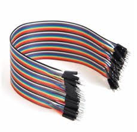
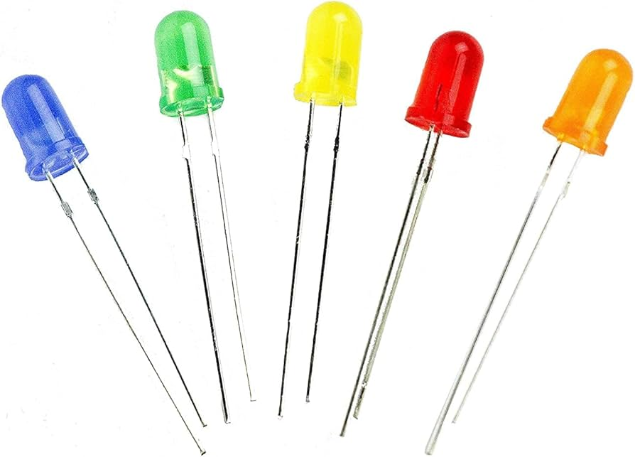
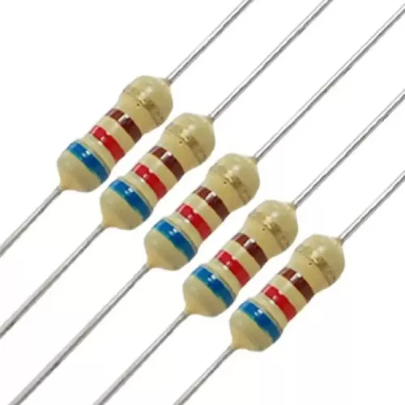

Manual Prático de Montagem do Projeto
Passo 1: Preparação dos Componentes
Realizando medições, cortes e ajustes necessários para garantir a precisão e a qualidade dos componentes do projeto.
Passo 2: Conexão dos Componentes
Conectando os componentes do Arduino conforme o esquema elétrico, garantindo que cada pino esteja corretamente posicionado para uma comunicação eficiente entre os módulos.
Passo 3: Desenvolvimento do Código
Desenvolvendo o código necessário para integrar todos os componentes e garantir o funcionamento adequado de todas as funcionalidades do projeto.
Componentes e Suprimentos Utilizados
Fios e Conectores
Fios e conectores são essenciais para interligar a placa Arduino e outros dispositivos, como sensores e atuadores. Eles garantem conexões seguras e estáveis para o funcionamento do circuito.
LEDs
O LED (Light Emitting Diode) emite luz quando a corrente elétrica passa por ele. No Arduino, é amplamente usado para indicar o status do sistema.
Tela LCD
A tela LCD exibe caracteres, símbolos e gráficos. Controlada pelo Arduino, é útil para mostrar mensagens ou variáveis em tempo real.

Resistores
Resistores limitam a corrente elétrica em um circuito, protegendo os componentes sensíveis. Eles são essenciais para o controle de tensão e corrente.
Exemplo de Código: Função retornaValor
int retornaValor(int pino) {
if (analogRead(pino) >= sense) {
return 1;
} else {
return 0;
}
}
void setup() {
Serial.begin(9600);
lcd.init();
lcd.setBacklight(HIGH);
lcd.print("Hello World!");
}
Acesse o código completo no repositório do GitHub: Projeto no GitHub .